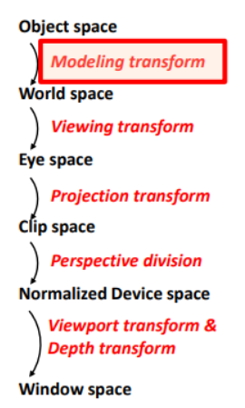

Los vec2 son vectores de 2 dimensiones que representan principalmente coordenadas de textura 2D (s, t) o posiciones en 2D (x, y).
vec2(0.5, 0.5) // El centro de una textura (s=0.5, t=0.5)
Los vec3 son vectores de 3 dimensiones que representan posiciones en el espacio 3D (x, y, z), vectores de dirección (como Normales o Luces) o colores RGB.
vec3(1.0, 0.0, 0.0) // Rojo puro (RGB)
Los vec4 son vectores de 4 dimensiones que representa un color RGBA (Red, Green, Blue, Alpha).
vec4(0.0, 0.0, 0.0, 1.0) //Negro opaco
En el vertex shader se realiza el proceso de visualización:

Básicamente son 6 pasos de transformación de espacios:
1.Object => 2. World => 3.Eye => 4.Clip => 5.Normalize => 6.Window
El Hardware se ocupa de los pasos 5-6.
Es decir, en el vertex shader tenemos que jugar con los pasos 1-4. Esto se hace con las matrices:
// Pas 1
modelMatrix;
// Pas 2
modelViewMatrix = viewMatrix*modelMatrix;
// Pas 3
vec4 pos_eye_4 = modelViewMatrix * vec4(vertex, 1.0);
// Pas 4
gl_Position = projectionMatrix * pos_eye_4;
Notése como gl_Position es la coordenada final Clip Space.
Obviamente esto es análogo a hacerlo directamente:
gl_Position = modelViewProjectionMatrix * vec4(vertex, 1.0);
Luces
Seguimos el modelo de iluminación de Phong. Este modelo describe el color de un punto en una superficie como la suma de tres componentes de luz:
La fórmula completa es:
= + +
matAmbient (): El color ambiental del material (cuánta luz ambiental refleja).lightAmbient (): El color de la luz ambiental de la escena.En código:
// uniform vec4 matAmbient; // Ka
// uniform vec4 lightAmbient; // Ia
vec4 Color_Ambiental = matAmbient * lightAmbient;
Si no hay luz ambiente, o se ignora, la empezamos en negro.
vec4 finalColor = vec4(0.0, 0.0, 0.0, 1.0);
matDiffuse (): El color difuso del material (su color "real").lightDiffuse (): El color de la luz principal.dot(N, L)). Mide qué tan alineada está la superficie con la luz. Si es 1, la luz da de lleno. Si es 0, la luz pasa de refilón. Si es negativo, la luz está detrás y max(0.0, ...) lo convierte en 0.En código:
// uniform vec4 matDiffuse; // Kd
// uniform vec4 lightDiffuse; // Id
// uniform float matShininess; // S
//
// Vectors (han d'estar normalitzats):
// vec3 N; // Vector Normal (unitari)
// vec3 L; // Vector Llum (unitari)
float NdotL = max(0.0, dot(N, L));
vec4 Color_Difuso = matDiffuse * lightDiffuse * NdotL;
matSpecular (): El color especular del material (de qué color es el brillo).lightSpecular (): El color del brillo de la luz.matShininess (): La brillantor o "dureza" del reflejo (un número alto crea un punto de luz pequeño y nítido; un número bajo crea un brillo amplio y difuso).reflect(-L, N).dot(R, V)). Mide qué tan alineado está tu ojo con el "rebote" de la luz. Si es 1, ves el reflejo de lleno.En código:
// Propietats:
// uniform vec4 matSpecular; // Ks
// uniform vec4 lightSpecular; // Is
// uniform float matShininess; // S
//
// Vectors (han d'estar normalitzats):
// vec3 N; // Vector Normal
// vec3 L; // Vector Llum
// vec3 V; // Vector Vista
// vec3 R; // Vector Reflex (calculat)
vec3 R = reflect(-L, N); // reflect() calcula el rebot de L sobre N
float RdotV = max(0.0, dot(R, V));
vec4 Color_Especular = matSpecular * lightSpecular * pow(RdotV, matShininess);
Para calcular la iluminación completa en un punto, necesitas saber:
mat...):
matAmbient): Color de fondo.matDiffuse): Color base.matSpecular): Color del brillo.matShininess): Dureza del brillo.light...):
lightAmbient): Color de la luz ambiental.lightDiffuse): Color de la luz difusa.lightSpecular): Color de la luz especular.lightPosition: Posición de la luz (para calcular L).Con la fórmula final:
// El color final és la suma de les tres components
vec4 finalColor = Color_Ambiental + Color_Difuso + Color_Especular;
// Assegurem que l'alfa sigui 1.0 (opac)
finalColor.a = 1.0;
(Usar para ejercicios de Deformación, p.ej., Look, Dolphin, Cubify)
#version 330 core
// --- INPUTS (from your 3D model) ---
layout (location = 0) in vec3 vertex;
layout (location = 1) in vec3 normal;
layout (location = 2) in vec3 color;
layout (location = 3) in vec2 texCoord;
// --- OUTPUTS (to the Fragment Shader) ---
out vec4 frontColor; // El color FINAL calculado por vértice
out vec2 vtexCoord; // La coordenada de textura
// --- UNIFORMS (from the viewer) ---
uniform mat4 modelViewProjectionMatrix;
uniform mat3 normalMatrix;
void main()
{
vec4 vertex_objectspace = vec4(vertex, 1.0);
vec3 normal_objectspace = normal;
// Calcula la normal en Eye Space
vec3 N = normalize(normalMatrix * normal_objectspace);
// Calcula el color (iluminación simple por Z)
frontColor = vec4(color,1.0) * N.z;
// Pasa la coordenada de textura
vtexCoord = texCoord;
// Calcula la posición final
gl_Position = modelViewProjectionMatrix * vertex_objectspace;
}
#version 330 core
// --- INPUT (from the Vertex Shader) ---
in vec4 frontColor; // Recibe el color interpolado
// --- OUTPUT ---
out vec4 fragColor;
void main()
{
// Simplemente asigna el color calculado en el VS
fragColor = frontColor;
}
(Usar para ejercicios de Texturas, Color Procedural o Iluminación, p.ej., Smile, Digits, Nlights, Flag)
#version 330 core
// --- INPUTS (from your 3D model) ---
layout (location = 0) in vec3 vertex;
layout (location = 1) in vec3 normal;
layout (location = 2) in vec3 color;
layout (location = 3) in vec2 texCoord;
// --- OUTPUTS (to the Fragment Shader) ---
out vec2 vtexCoord; // Pasa la coordenada de textura
// --- UNIFORMS (from the viewer) ---
uniform mat4 modelViewProjectionMatrix;
void main()
{
// Pasa la coordenada de textura
vtexCoord = texCoord;
// Calcula la posición final
gl_Position = modelViewProjectionMatrix * vec4(vertex, 1.0);
}
#version 330 core
// --- INPUT (from the Vertex Shader) ---
in vec2 vtexCoord;
// --- OUTPUT ---
out vec4 fragColor;
// --- UNIFORMS (Añadir los que necesites) ---
// (p.ej., uniform sampler2D colorMap;)
void main()
{
// ==============================================================
// DEBES declarar una variable 'finalColor'.
//
// (p.ej., vec4 texColor = texture(colorMap, vtexCoord);)
// (p.ej., vec4 finalColor = texColor;)
// ==============================================================
// (Esta línea usará el 'finalColor' que has definido arriba)
fragColor = finalColor;
}
Casi todos los problemas de examen se dividen en estas tres categorías. Identificar el tipo de problema te dice inmediatamente qué esqueleto usar y dónde vas a escribir tu código.
Look, Dolphin, Dalify, Cubify..vert).STEP 3 (VS)). La iluminación simple que calcula por defecto (frontColor = ... * N.z) suele ser la que piden estos ejercicios.if, distance, fract, etc.).texture(), sampler2D, colorMap, vtexCoord, if, discard, procedural.Digits, Smile, Flag, Beach, Hunter..frag).uniforms (como sampler2D) y "snippets" (como "Pasar Normal" si el efecto depende de v_normal_eye, como en "Smile") al esqueleto 2.Phong, Iluminación, N, L, V, R, matDiffuse, lightSpecular, etc.Nlights, LightChange, 8lights..frag).v_normal_eye para N).v_position_eye para V y L).uniforms de materiales (mat...) y luces (light...) que necesites.Esta línea de código calcula el ángulo (en radianes) para un ítem específico i dentro de un total de n ítems que están distribuidos uniformemente alrededor de un círculo completo.
float angle = 2.0 * pi * float(i) / float(n);
angle: La variable de salida. Es el ángulo en radianes para el ítem actual del bucle.2.0 * pi: Representa un círculo completo ( radianes o 360°).float(i): El índice del ítem actual (p. ej., el ítem 0, el ítem 1, el ítem 2...). Se convierte a float para forzar una división con decimales.float(n): El número total de ítems que quieres distribuir alrededor del círculo (p. ej., n=4 divisiones).Se usa dentro de un bucle for para encontrar la posición (x, y) de cualquier cosa que necesite estar en un círculo de radio R:
// Ángulo para el ítem 'i'
float angle = 2.0 * pi * float(i) / float(n);
// Cálculo de la posición (x, y) usando trigonometría
float x = R * cos(angle);
float y = R * sin(angle);
vec3 posicion_en_el_circulo = vec3(x, y, 0.0);